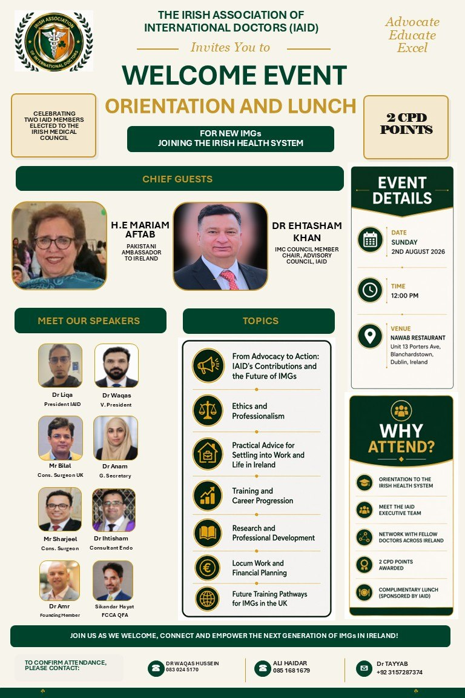
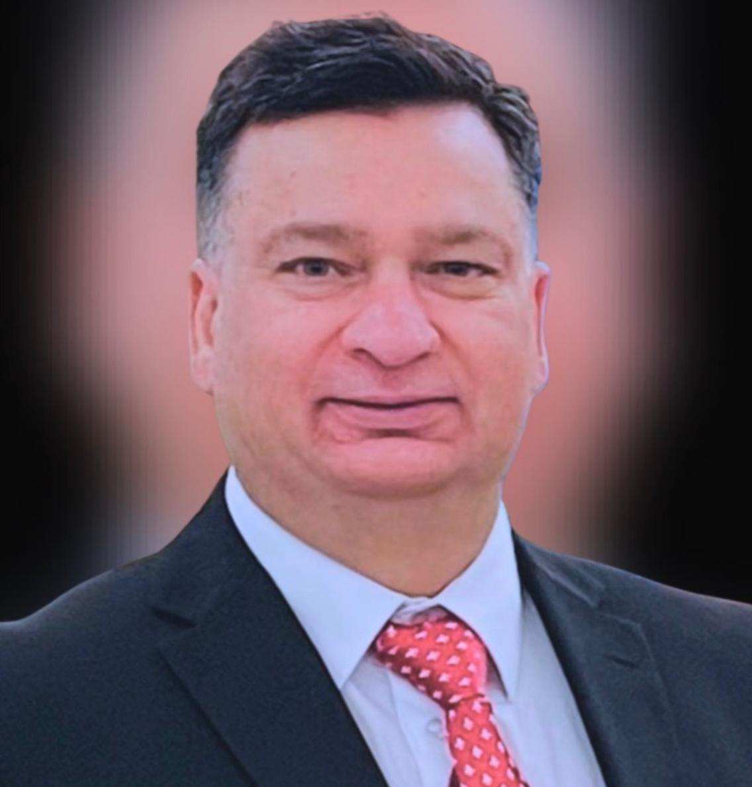
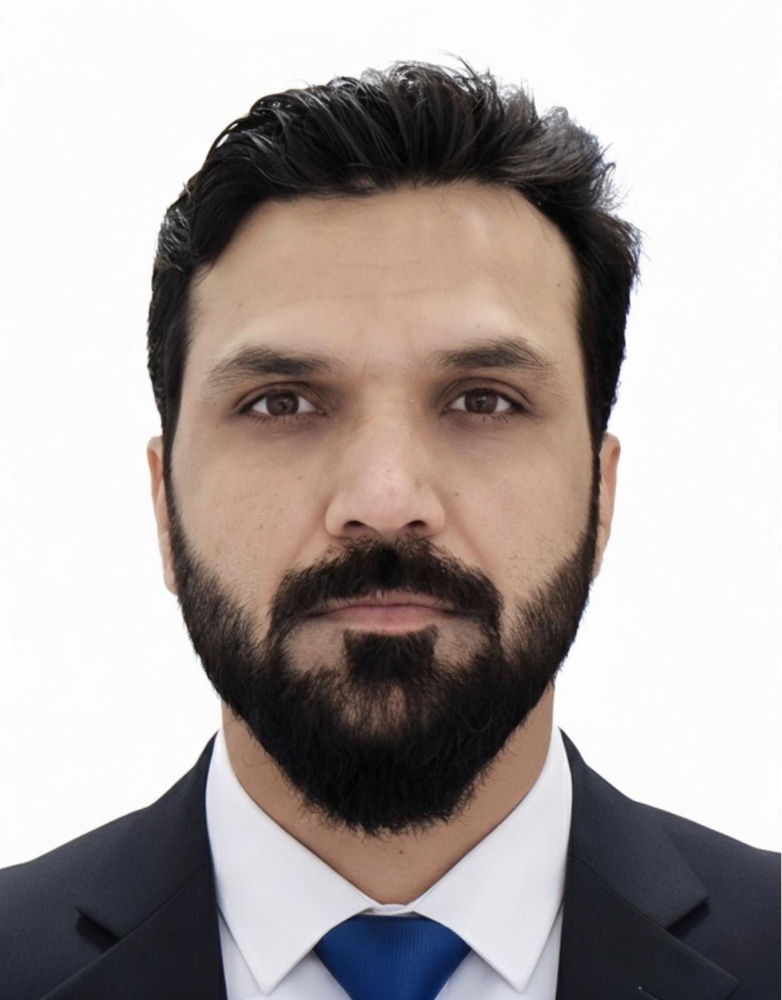
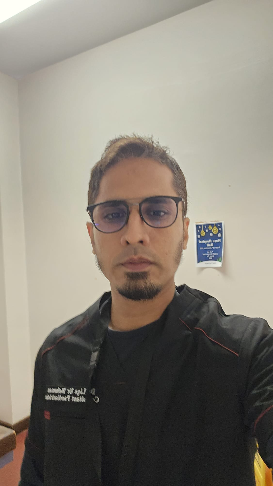
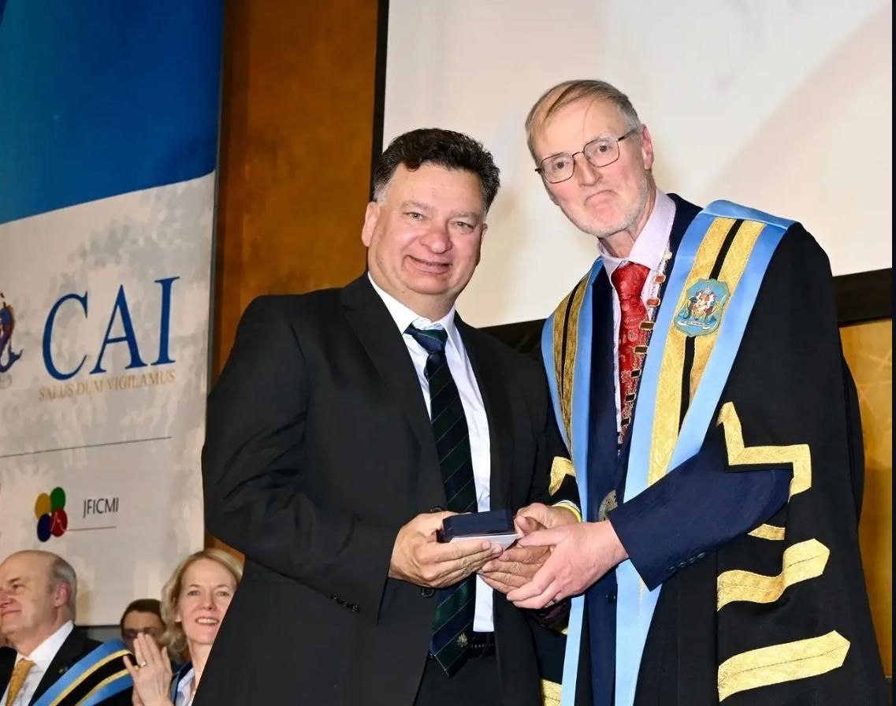
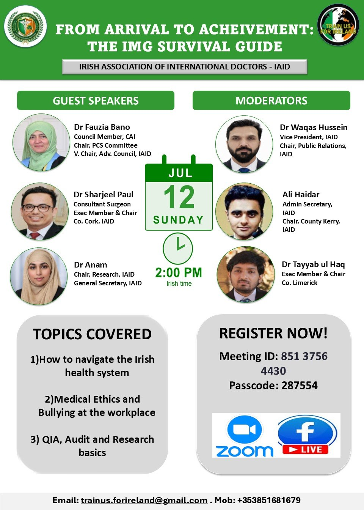
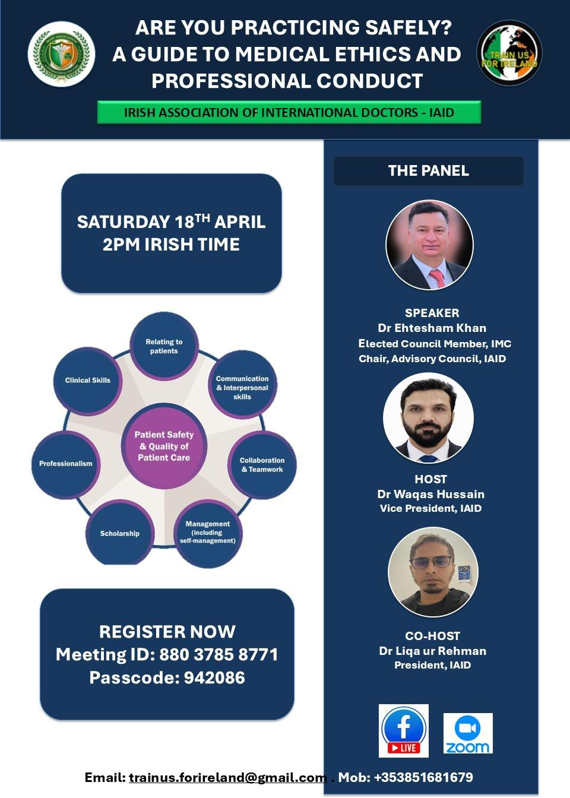
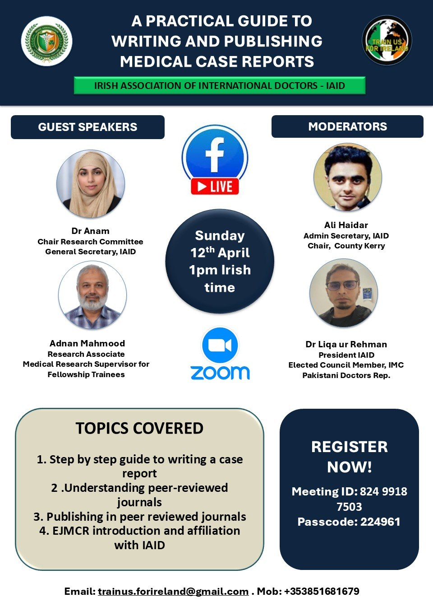
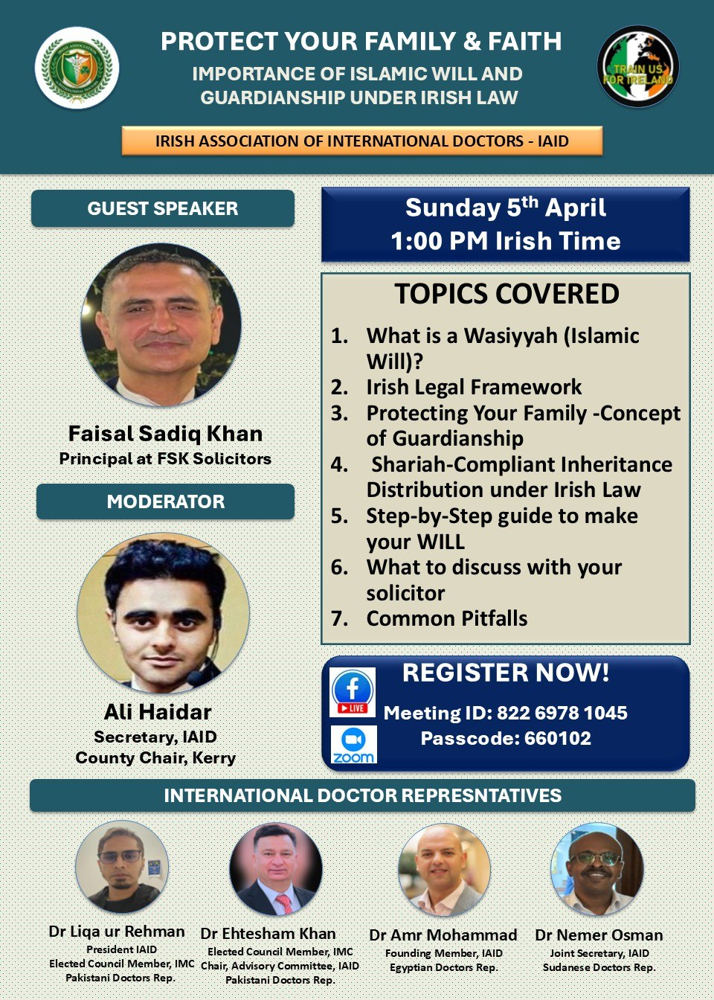

Grand Welcome Event for newly arrived doctors
IAID welcomes new International Medical Graduates joining the Irish health system for an afternoon of orientation, professional guidance, networking, and community connection.
What the programme covers
- Orientation to the Irish healthcare system
- Ethics, professionalism, and workplace life
- Training and career progression
- Research, professional development, locum work, and financial planning
- Future training pathways for IMGs in the UK
The event includes a complimentary lunch sponsored by IAID.
Service, leadership, and professional recognition
IAID celebrates members whose leadership, regulatory service, professional contribution, and advocacy strengthen medicine in Ireland.

Dr. Ehtesham Khan
IAID celebrates the historic election of Executive Member and Advisory Committee Chair Dr. Ehtesham Khan as a Council Member of the Irish Medical Council in February 2026, secured with a substantial majority and historic lead.

Dr. Waqas Hussain
IAID Vice President Dr. Waqas Hussain was appointed and assumed his position as a Council Member of the Irish Medical Council in July 2026.

Dr. Liqa Ur Rehman
IAID marks a historic milestone as President Dr. Liqa Ur Rehman completed his three-year tenure as a Council Member of the Irish Medical Council, serving from 2023 to June 2026.

Dr. Ehtesham Khan receives the prestigious CAI College Medal
The College of Anaesthesiologists of Ireland formally recognised Dr. Khan’s significant contributions to anaesthesiology and critical care services, together with his dedicated training support for NCHDs. IAID is proud to have him serve as Chair of its Advisory Committee.
A continuing programme of online education
IAID regularly conducts online educational webinars and will continue this programme throughout the year. CPD points are awarded to attendees for eligible sessions, with the points and registration details announced for each event.

From arrival to achievement
Practical orientation for IMGs entering the Irish health system.

Medical ethics and professional conduct
Patient safety, communication, professionalism, and responsible practice.

Research and medical publishing
Case reports, peer review, journal selection, and professional development.

Practical life and family guidance
Specialist-led sessions on legal, family, and settlement matters in Ireland.
Future webinars will continue to cover clinical practice, ethics, research, career progression, professional wellbeing, and practical life in Ireland.
Receive programme updates